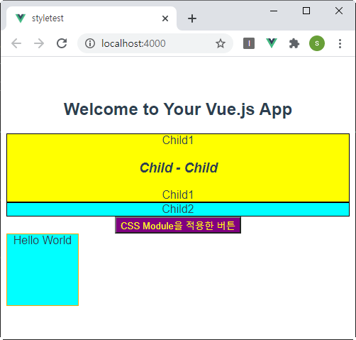

만들어볼 예제

컴포넌트 스타일 적용 방법
1. 전역 CSS
CSS 충돌
2. 범위 CSS(scoped CSS)
<style scoped></style>
느리다
하위컴포넌트에 적용된다.
3. 모듈 CSS(module CSS)
<style module></style>
$style 로 사용
v-bind:class="$style.hand"
v-bind:class="[$style.hand,$style.border]"
Vue-CLI 을 사용하여 어플리케이션을 만들고 컴포넌트 스타일 적용 방법을 학습한다.
1. 프로젝트 생성 작업
step 1-01. Vue-CLI 전역 설치 삭제
$ npm uninstall -g @vue/cli
step 1-02. Vue-CLI 전역 설치. 한번만 수행. --force 를 사용하면 강제로 덮어쓰게 된다.
$ npm install -g @vue/cli --force
step 1-03. vue-cli 버전 확인
$ vue -V
Vue CLI v4.5.8
step 1-04. 현재 폴더의 파일 목록 조회
$ ls
vue38컴포넌트-스타일.html
step 1-05. styletest 프로젝트 생성
$ vue create styletest # Vue 프로젝트 생성. package.json 생성. 라이브러리 다운로드
Vue CLI v4.5.6
? Please pick a preset: Manually select features
? Check the features needed for your project: Choose Vue version, Babel, Router, Vuex, Linter
? Choose a version of Vue.js that you want to start the project : 2.x
? Use history mode for router? Yes
? Pick a linter / formatter config: Prettier
? Pick additional lint features: Lint on save
? Where do you prefer placing config for Babel, ESLint, etc.? In dedicated config files
? Save this as a preset for future projects? No
step 1-06. 현재 폴더의 파일 목록 조회. 프로젝터 폴더(styletest) 존재 여부 확인.
$ ls
styletest vue38컴포넌트-스타일.html
step 1-07. 생성된 프로젝트 폴더(styletest)로 이동
$ cd styletest
step 1-08. 현재 폴더의 파일 목록 조회. package.json 이 보이면 정상.
$ ls
babel.config.js node_modules package.json package-lock.json public README.md src
step 1-09. styletest/package.json 수정
/* --open: 브라우저로 열기, --port 4000 : 4000 포트로 서버 실행 */
"scripts": {
"serve": "vue-cli-service serve --open --port 4000",
"build": "vue-cli-service build",
"lint": "vue-cli-service lint"
},
step 1-10. 현재 폴더의 파일 목록 조회. package.json 존재하는지 확인
$ ls
step 1-11. 서버 실행. package.json 이 있는 폴더에서 실행 해야 됨.
$ npm run serve
step 1-12. 배포용 파일 만들기. package.json 이 있는 폴더에서 실행 해야 됨.
$ npm run build
2. styletest 프로젝트 폴더 구조
styletest
├─ dist
├─ node_modules
├─ public
│ └─ index.html
│ └─ favion.ico
└─ src
│ └─ components
│ │ └─ HelloWorld.vue # 파일 삭제
│ │ └─ Child1.vue # 파일 생성. 스타일 기능을 테스트용 component
│ │ └─ Child2.vue # 파일 생성. 스타일 기능을 테스트용 component
│ │ └─ Module1.vue # 파일 생성. 스타일 기능을 테스트용 component
│ ├─ router # 라우터
│ ├─ views # 라우터 페이지
│ ├─ App.vue
│ └─ main.js
├─ babel.config.js
├─ package.json
└─ README.md
3. Child1.vue
step 3-1. src/components/Child1.vue 에 추가
<style scoped>
.main { border:solid 1px black; background-color:yellow; }
</style>
<template>
<div class="main test">
{{msg}}
<child11 />
{{msg}}
</div>
</template>
<s cript>
import Child11 from './Child11.vue'
export default {
name: 'child1',
components : { Child11 },
data () {
return {
msg: 'Child1'
}
}
}
</s cript>
step 3-2. src/components/Child2.vue 에 추가
<style scoped>
.main { border:solid 1px black; background-color:aqua; }
</style>
<template>
<div class="main">{{msg}}</div>
</template>
<s cript>
export default {
name: 'child2',
data () {
return {
msg: 'Child2'
}
}
}
</s cript>
step 3-3. src/components/Module1.vue 에 추가